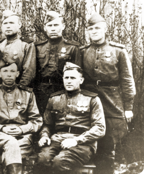
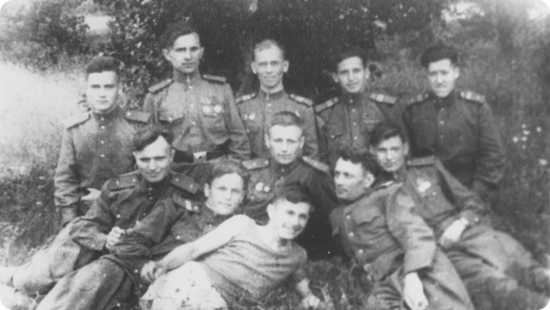
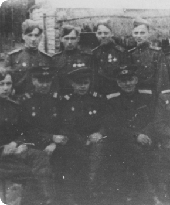
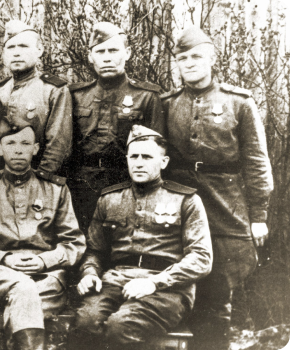
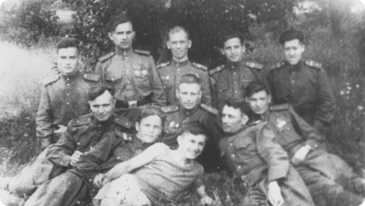
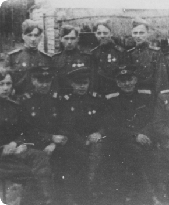
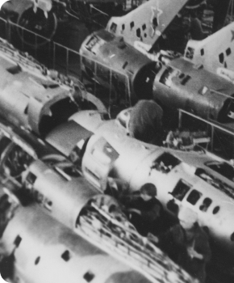
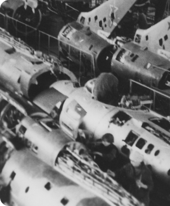
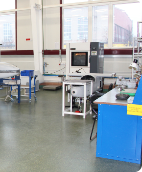
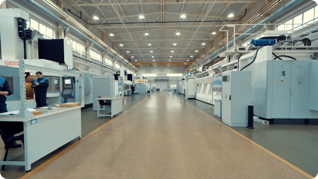

Главная
.png)
О нас
История
 






На основании распоряжения УЭРТУ ВВС РККА № 386 и приказа
ремотдела штаба ВВС ЮЗФ от 26 октября
1941 г. 257 САМ перебазируются в г. Сорочинск Чкаловской области,
а 38-е ПАМ остаются в г. Урюпинске и начинают функционировать
как самостоятельная боевая единица. С 16 ноября 38 ПАМ приступили
к восстановлению лёгких бомбардировщиков Су-2, самолётов У-2,
моторов М-88 и М-11 8-й Воздушной Армии ВВС ЮЗФ. За время боевой
работы в Урюпинске, менее чем за год, личный состав мастерских
вернул в строй 151 самолёт и 143 авиамотора.
Для оперативного ввода в строй авиатехники, получившей боевые
повреждения, в январе 1942 года из состава мастерских были
сформированы ремонтные бригады типа ПАРМ-3 и переброшены
в Ленинск Сталинградской области для ремонта самолётов на полевых
аэродромах и авиаплощадках.
Согласно указанию командующего ВВС КА № 4596 от 11 июля 1942 года
38 ПАМ 8 ВА двумя железнодорожными составами перебазируются
из г. Урюпинска за Волгу, на станцию Безымянная Саратовской
области. Мастерские получили специальный авиаремонтный поезд,
где разместилось все техническое оборудование, инструменты
и личный состав. С этого момента мастерские стали полностью
соответствовать своему названию и назначению — находиться
как можно ближе к своим частям для обеспечения оперативного
восстановления повреждённых в боях самолётов. В этом поезде
38 ПАМ за оставшийся период Великой Отечественной войны прошли
боевой путь от Сталинграда до восточной Пруссии.
Во второй половине 1942 года, когда началась Сталинградская битва,
мастерские, кроме самолётов Су-2 и По-2 и моторов к ним, начали
ремонтировать штурмовики Ил-2, истребители Харрикейн и моторы
АМ-38, Мерлин ХХ, М-82. Коллектив ремонтников-авиаторов
на Сталинградском фронте проделал неоценимую работу в борьбе
за вторую жизнь подбитых, полусожженых самолётов — воспрянув
буквально из пепла, они вновь устремлялись в небо на борьбу с врагом.
За выполнение заданий по ремонту авиатехники на Сталинградском
фронте весь личный состав мастерских был награждён медалью
«За оборону Сталинграда».

.png)
В 1943 году обстановка изменилась. Фронт быстро продвигался
на Запад. В феврале мастерские передислоцировались на разъезд
Афросимовский, в мае на станцию Пролетарская, в октябре в г. Донецк.
По инициативе командира 38 ПАМ подвижные авиаремонтные бригады
находились в боевых полках для оперативного восстановления
авиатехники в полевых условиях.
После освобождения Крыма 38 ПАМ были переданы в состав 3-го
Белорусского фронта и перебазированы в июле 1944 года на
> Ельня Смоленской области, где участвовали в обеспечении операции
«Багратион» по освобождению Беларуси. В начале 1944 года
был получен приказ о перебазировании в Каунас Литовской
ССР в состав 1-й Воздушной Армии. В апреле 1945 года часть
перебазировалась в Гумбиннен, ныне Гусев Калининградской области
и здесь продолжала боевую работу по восстановлению авиатехники
до конца Великой Отечественной войны. За годы войны силами
личного состава части восстановлено 286 самолётов различных типов,
что эквивалентно численности 8–9 авиаполков, отремонтировано
1285 авиационных моторов различных типов.
5 апреля 1945 года 38-е подвижные авиационно-ремонтные
железнодорожные мастерские за боевые заслуги в период Великой
Отечественной войны 1941–1945 гг. Указом Президиума Верховного
Совета СССР награждены орденом Красной Звезды. 107 человек
удостоены высоких правительственных наград. Весь личный состав
был награждён медалями «За победу над Германией в Великой
Отечественной войне 1941–1945 годов».
В августе 1945 года мастерские передислоцировались в г. Новоельня
Гродненской области и вошли в состав 26 Воздушной Армии.
С мая 1953 года местом постоянной дислокации части становится
г. Барановичи Брестской области.
С 1953 по 1956 год отремонтировано 56 самолётов Ил-10. В 1956 году
коллектив мастерских успешно освоил ремонт реактивных самолётов
МиГ-15 и МиГ-17.
15 октября 1958 года 38-е ордена Красной Звезды Подвижные
железнодорожные мастерские приказом главкома ВВС переводятся
на штат авиационно-ремонтной базы с присвоением названия «32-я
ордена Красной Звезды Военная база» с подчинением 26 Воздушной
Армии. В том же году военная база перебазировалась
из железнодорожных вагонов в новые производственные помещения
на существующую сегодня территорию. Таким образом, закончился 17-
летний «рельсовый период». После размещения на новом месте
коллектив базы приступил к освоению ремонта первого советского
фронтового бомбардировщика Ил-28.
В связи c переводом на штат авиационной базы и присвоением нового
наименования («32-я ордена Красной Звезды Военная база»)
14 февраля 1961 года знамя части было сдано на хранение
в Центральный музей Советской Армии, а орден Красной Звезды —
в Главное управление кадров Министерства Обороны СССР.
В 1961 году завод успешно освоил ремонт дальних бомбардировщиков
Ту-16. За 2,5 года было отремонтировано и передано в строевые части
62 самолёта. Одновременно с ремонтом Ту-16 на базе началась сборка
сверхзвуковых истребителей Су-7. За два года было собрано
и отправлено в части 180 самолётов.
.png)
.png) 

В январе 2009 года предприятие преобразовано в открытое
акционерное общество «558 Авиационный ремонтный завод».
В декабре 2010 года в ОАО «558 АРЗ» создана структура по разработке
и производству беспилотных летательных аппаратов.
С 2015 года ведётся работа по выходу ОАО «558 АРЗ» на позиции
подрядчика второго уровня авиастроительных предприятий
международного аэрокосмического комплекса. Так в 2017 году
был введён в эксплуатацию новый цех площадью 2160 м2,
оснащённый современным станочным оборудованием, позволяющим
изготавливать детали различной сложности и номенклатуры
из алюминиевых и титановых сплавов, конструкционных, жаропрочных
и нержавеющих сталей. Сегодня общая производственная площадь,
оснащённая станочным и технологическим оборудованием, составляет
более 13 000,0 м². Станочный парк насчитывает более 30 станков
с ЧПУ и более 40 единиц универсального оборудования.
2 июля 2019 года в г. Барановичи на базе ОАО «558 Авиационный
ремонтный завод» состоялась торжественная церемония передачи
из Центрального музея Вооружённых Сил Российской Федерации
Боевого Знамени, копии грамоты Президиума Верховного Совета СССР
и орденской книжки, а также дубликата ордена Красной Звезды
в ОАО «558 Авиационный ремонтный завод». Переданные российской
стороной реликвии отныне хранятся в музее ОАО «558 АРЗ»



 + 375(16) 374-70-98
+ 375(16) 374-70-89
+ 375(16) 374-70-98
+ 375(16) 374-70-89